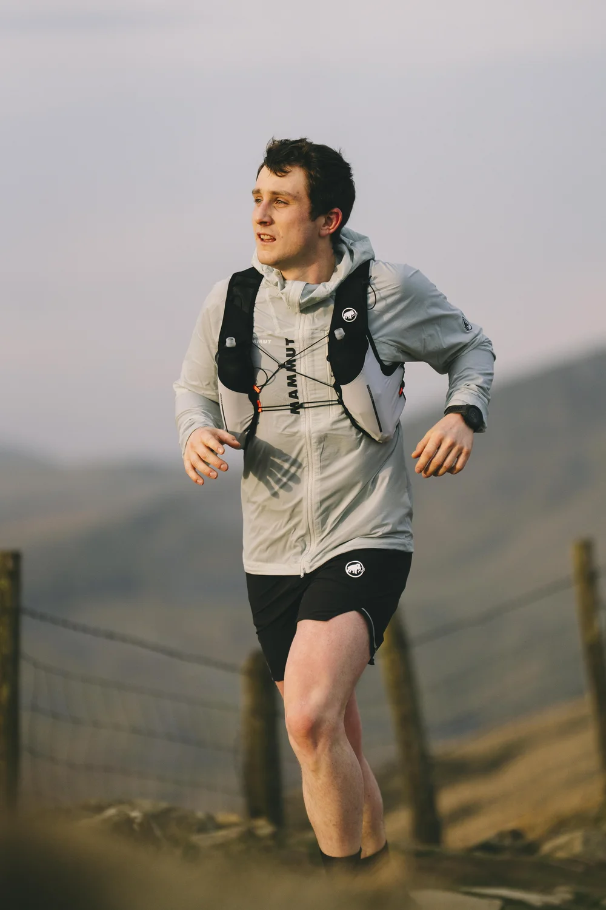

Performance anxiety is extremely common. It shows up in moments where the stakes feel high — job interviews, exams, competitions, or the final of an elite sporting event. These are the situations we've trained, prepared, and dreamed about.
Because the outcome matters so much, our minds sometimes react as if we're facing genuine danger. Often, performance anxiety begins after a moment that didn't go to plan. You felt ready, but something went wrong. You came up short, and that memory stuck. Now every time you approach a similar situation, that old feeling resurfaces — your heart races, your breath shortens, your thoughts spiral.
Anxiety itself isn't "bad." It's a survival mechanism: fast heartbeat pumps blood to muscles, quick breathing delivers oxygen, rapid thoughts help problem-solve. But in sport or performance settings — serving at match point, stepping onto a climbing wall, giving a presentation — this fight-or-flight response can work against us. Thinking "don't mess up again" drags us away from the calm, automatic, high-focus state we need to perform well.
And when anxiety pulls us away from our best, the thing we feared often becomes more likely. This can lead to a vicious cycle: anxiety → under-performance → more anxiety.
The good news? You can break that cycle. The way through is by shifting your focus back to the process, the present moment, and the way you talk to yourself.
1Focus on the Process
Performance anxiety almost always arises when the outcome becomes magnified: winning, beating someone, getting the job, proving yourself. It's natural — high-performers care deeply about success.
But ironically, athletes rarely perform at their best when thinking about the outcome. Flow state — the mental zone where everything clicks — comes when the mind stops analysing and simply acts.
"You are not thinking ahead. You are just thinking about what is in front of you each second."
— Aron RalstonFlow happens when you're absorbed in the process, not worrying about the result. And the truth is simple: if you're performing at your best, the outcome will take care of itself. If you don't win, then focusing on the outcome wouldn't have changed it anyway.
So redirect your attention:
- What do you love about your sport?
- What does it feel like when you're at your best?
- What sensations, movements, or rhythms matter in this moment?
Chase that feeling, not a medal.
2Come Back Into the Body
When anxiety takes over, we leave the present moment. The mind jumps to the past ("remember that mistake?") or into the future ("what if I fail again?"). But flow happens only in the now.
To return to the present, reconnect with your body. A few effective strategies:
Breathwork
The breath is always here. Using it anchors you. Try box breathing:
- Inhale for 4 seconds → hold for 4 → exhale for 4 → hold for 4.
- Imagine drawing a square with each phase of the breath.
This slows the nervous system and grounds your attention.
Sensory Grounding
Look around you. Name five green objects, then five red, then five blue. It seems simple, but it pulls your brain out of worry and into what's real right now.
Cold Exposure
Hold an ice cube in your hand. It's cold, sharp, impossible to ignore. This intense sensation snaps you back into the present moment — the only place performance happens.
3Positive Self-Talk
When anxiety rises, inner dialogue often becomes harsh:
- "You always mess this up."
- "Don't fail again."
- "You're not good enough."
Imagine someone standing next to you saying that out loud while you compete. They'd destroy your performance. Yet we often speak to ourselves this way without even noticing.
You need to become your biggest supporter, not your biggest critic. Positive self-talk directly boosts performance. Confidence isn't a luxury — it's a tool.

Try this before your next performance: write down five positive things about yourself. They don't need to be sport-specific — your qualities as a person count. Remind yourself that you're enough, just by existing.
"When you felt like you were floating across the court and could put the ball wherever you wanted."
— Guy Forget, on flow state in tennisThat state is fuelled by confidence, calm, and positive energy — not criticism.